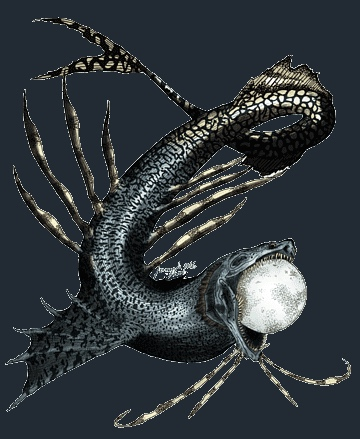

Bakunawa

The Bakunawa is a serpent-like dragon believed to be the cause of moon eclipses and severe weather such as earthquakes, winds, and rain. It's movement was used by ancient Filipinos in their geomantic calender system which is a type of calender in which the people interpreted a series of figures and analyzed them. The Bakunawa was also part of shamanistic rituals and the balaylan. The Bakunawa was generally known to be a sea serpent that was either ruler of the oceans or a creature that inhabitted the sky or the underworld. There are many variations of its tales, each meant to tell how it caused the lunar eclipse, but in general the great creature swallowed the night sky's multiple moons (the number varied from 6 to 7 moons) that used to circle the skies; it's reason for eating the moon or moons varies. Some myths say the Bakunawa envied or fell in love with their heavenly magnificence while other tales say the creature had a sister in a form of a turtle who was killed by the locals, resulting in the Bakunawa taking revenge by swallowing the moons. Either way, it was about to swallow the last moon when it was stopped in some way either by the locals on Earth or by a diety figure, typically one named Bathala who created the moons.
Berberoka

The Berberoka is a swamp creature that hungered for humans and lured its victims into a body of water by stopping the waterflow of rivers in some way; some known methods include sucking up the water or enlargening itself so it could act as a dam, containing the water. Either method led to the fish to be available for the Berberoka's prey to pick up. As they pick up the fish, the Berberoka would release the water and then eat its prey alive as they struggle in the water. Though its appearance varies a lot, it's typically perceived as a creature to be feared. However, ironic to its menacing form, these swamp ogres have a fear of crabs especially their pinchers.
Manananggal (Also known as a Titwi or a Wakwak)

During the dead of night, this creature, often depicted as a female, separates from the lower part of its body, sprouts it's bat-like wings and fly into the night with fangs ready to kill. All of this gives the manananggal a vampire-like appearance; it also as a long and hollow tongue that sucks out the guts of its victims. The manananggal is generally told to prey on pregnent women, men, couples, or even babies. In addition, a bird called a tiktik bird is sometimes said to accompany this demonic creature that makes a "tik-tik" or "ik-ik-ik" sound while they're flying in order to confuse the manananggal's prey. According to folklore, the fainter the sound is, the nearer the creature is and vise-versa. During the day, however, these creatures either live in the jungle in isolated huts or openly amongst humans and even marry men. When living amongst the humans, they take on the form of beautiful women and do ordinary human things. The manananggal is believed to fear knives, salts, ashes, and many more things.
Minokawa

The Minokawa is a dragon-like bird as big as an island that, like the Bakunawa, is used to explain the occurrence of the sun and moon eclipses. Basically, this great bird swallowed the moon long ago, but in doing so the people screamed in fear which made the Minokawa come down from beyond the skies (apparently it lives outside the skies on the eastern horizon) to see what all the fuss was. When the bird opened its mouth, the moon jumped out and escaped as fast as it can. Since then, the Minokawa continues to try to chase after the moon. It is said to be capable of swollowing the moon, the sun, and the earth. Some distinct features of the Minokawa are its feathers that are sharp as swords, eyes like mirrors and a beak and legs that are like steel.
Multo

A multo is basically a ghost. However, unlike Western beliefs that sometimes depict ghosts as scary hostile creatures, multos are highly regarded, usually referred to as ancestral spirits who can guide and protect people. The concept of a multo, or souls, is a little complicated as the concept of the souls of the dead are separate from the concepts of living souls in filipino folklore. Such ideas vary depending on the ethic group, each having their own unique concept of the nature of a person's multo(s). In short, a living person is said to be able to possess multiple souls, some having two while others having five, again depending on the ethic group. A person gets their souls either by certain deities or from special regions. It's even said that a person's overall physical and mental health influences the health of the person's soul, and when someone's souls are all gone, that person's body eventually dies. How the living souls of the deceased get converted into souls of the dead also vary between ethic group. Some say the multos recombine in the afterlife while in other cases, the souls go into different areas either to the afterlife or to its region of origin.
Santelmo

There's not much known about these creatures, but basically the name is a shortened form of the Tagalog words "Apoy ni San Elmo" which means "St. Elmo's fire". In other words, santelmo is a ball of fire or specifically, a spirit in such a fiery form. However, it's also said to take the form of natural fireworks or even having a more organic form but fire-like. It is usually blue or blueish white, yet is said to be heatless and non-consuming unlike the typical nature of fire. Whether they're good natured or hostile depends on the various myths. Some myths refer to them as being either bad omens or good omens, and the origins of how a santelmo is created also varies. Some say that santelmos are lost souls either seeking revenge on those who did them wrong or seeking peace.
Siyokoy

The siyokoy is one of the types of mer-creatures in filipino myths. While sirenas and kataws are usually depicted as typical western-myth merfolk, the siyokoys sometimes have a humanoid structure with more animalistic features such as gilled slits, scales, webbed limbs and fins. They are also said to have eels, octopus, rays, squids, and other intimidating aquatic animals to swim along with them. They are always male according to the myths while the sirenas are their female counterparts.